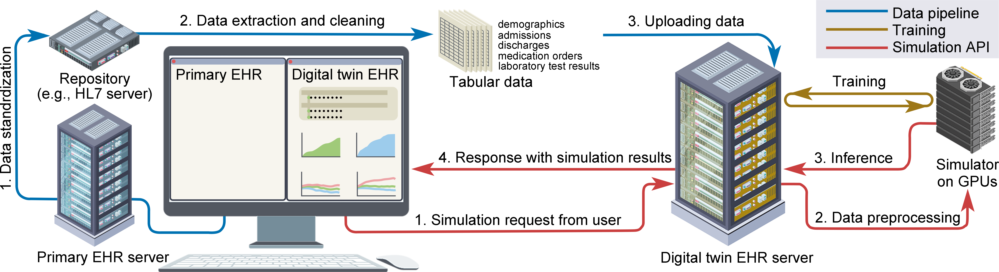

TwinEHR Documentation
TwinEHR is a web-based digital-twin electronic health record (EHR) system that mirrors standard clinical interfaces while integrating a generative AI backend. It simulates patient futures by using real patient timelines as prompts. Potential downstream applications include personalized medicine, counterfactual simulation, and in-silico clinical trials—advancing the role of AI in transforming clinical practice.
Note
This application only provides EHR backend and frontend. Clinical record database (PostgreSQL) and patient simulator AI is provided by our another repository Watcher. Please set up this AI and database before you launch TwinEHR.
Start with 👉 Tutorial
GitHub 👉 https://github.com/yuakagi/TwinEHR
Digital-Twin EHR System
Our digital-twin framework is illustrated below (Figure):
{kind=link}

This system enables the simulation of patient trajectories based on real-world clinical data, allowing opportunities for possible downstream applications such as personalized medicine, in-silico clinical trials and more.
To use the full digital-twin framework you will take these steps:
Prepare your own real-world clinical records
Upload them to the digital-twin database server (PostgreSQL)
Train a model
Run the simulation API server using the pretrained model
Launch TwinEHR
(Detaied steps are found in Watcher documentation.)
Please visit Watcher documentation for neccessary setups for clinical record database and AI before you launch TwinEHR.